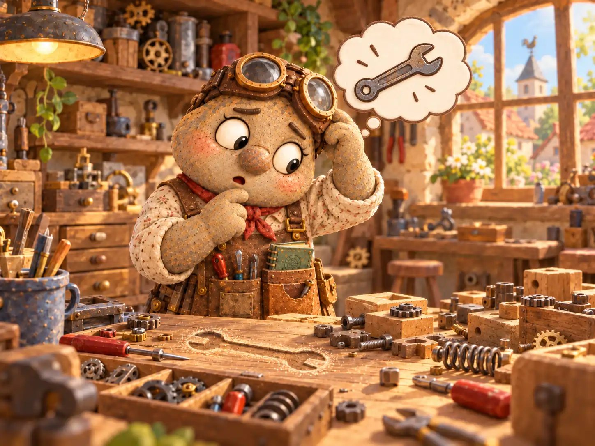
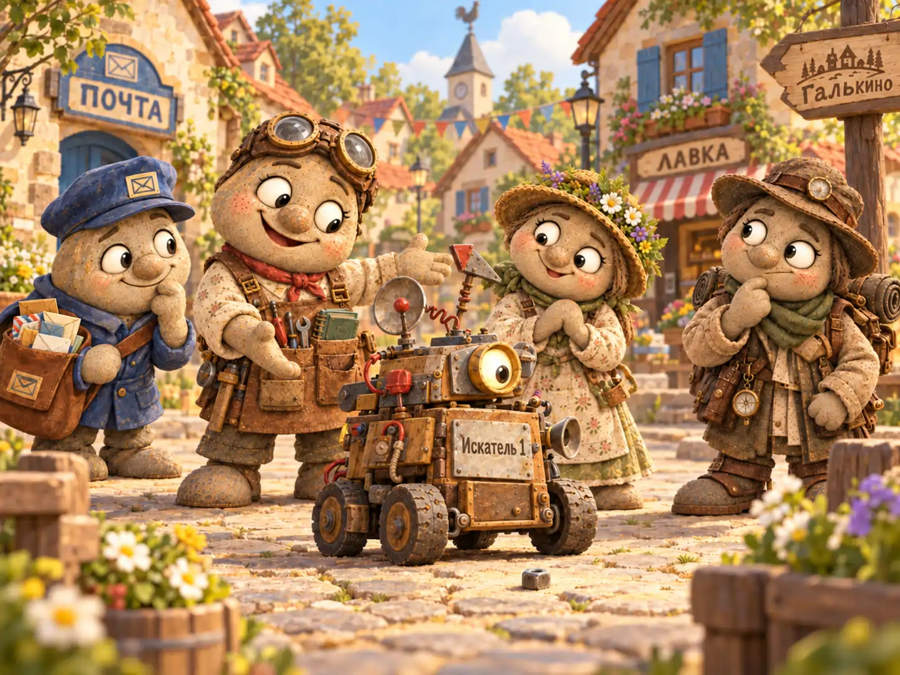
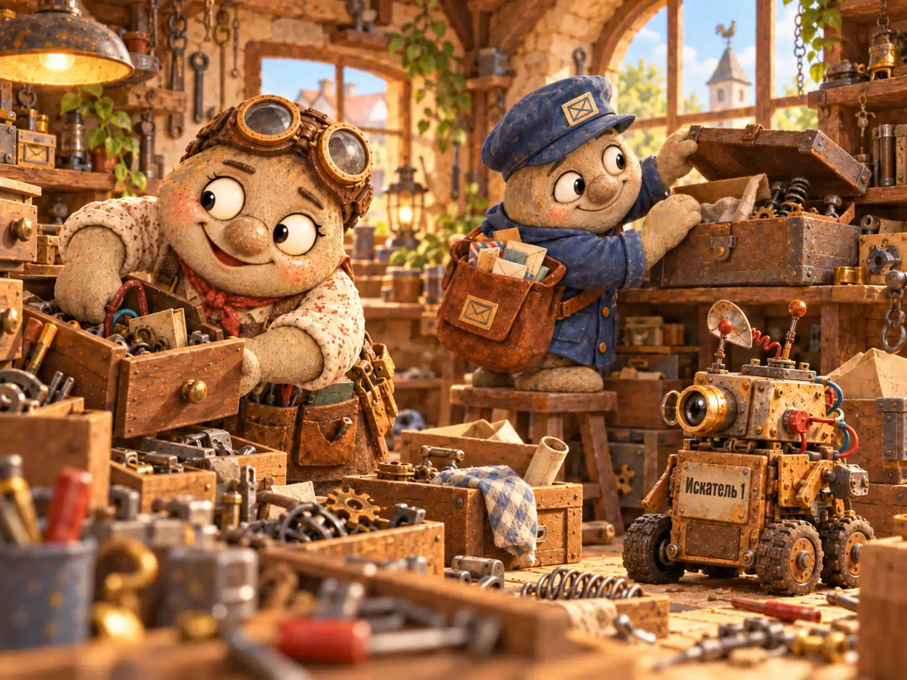
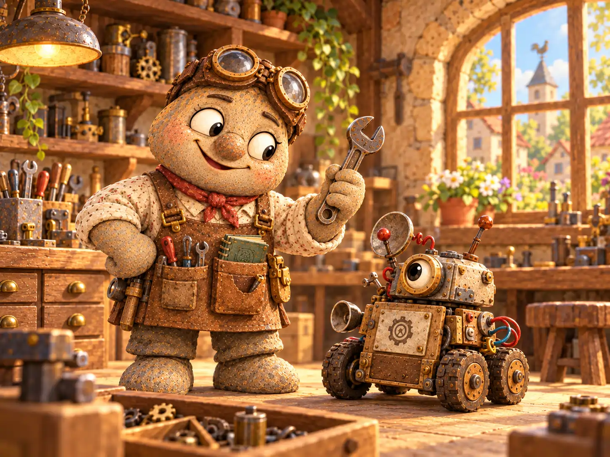

Если ранним утром над Галькино раздавался металлический стук, жители знали: Кузьма Лаптев уже в мастерской. А если вслед за стуком слышалось радостное «Получилось!», никто не торопился поздравлять изобретателя. Обычно это означало, что сейчас он придумает, как улучшить получившееся.
Кузьма любил разбираться, почему вещи работают именно так. Он мог разобрать исправный фонарь, чтобы понять устройство пружины, а потом собрать его с новой ручкой, более удобной, по его мнению. Однажды он поставил на садовую тачку дополнительное колесо, чтобы легче было везти камни по неровной дорожке. Колесо помогло. Но Кузьма заметил, что теперь тачку можно усовершенствовать ещё немного, и к вечеру во дворе стояла небольшая тележка.
— Ты ведь хотел только колесо починить, — заметил зашедший к нему почтальон Тимофей Булыжников.
— Так оно и починено, — ответил Кузьма. — Просто теперь у него появились товарищи.
Самой большой мечтой изобретателя был вечный двигатель — механизм, который мог бы работать без остановки. Кузьма хранил в шкафу папку с набросками и время от времени доставал её, добавляя очередную идею. Но пока ни одну из них он не сумел воплотить. Поэтому занимался вещами попроще: помогал чинить инструменты, делал полезные приспособления для соседей и с удовольствием брался за задачи, которых ещё никто не решал.
Одна такая задача появилась в самый неподходящий момент.
✦ ✦ ✦
Утром Кузьма собирался подтянуть крепление у верстака и обнаружил, что пропал его любимый гаечный ключ. Не самый большой и не самый красивый, зато точно подходивший к множеству болтов. Изобретатель помнил, как вечером положил ключ рядом с тисками. Теперь на этом месте лежала только медная шайба.
Он проверил карманы фартука, ящик с инструментами и полку над верстаком. Потом отодвинул табурет и заглянул под шкаф. Ключа не было.
— Вот бы существовала машина, которая сама находила потерянные вещи, — пробормотал Кузьма.
Сказав это, он замер. За окном уже светило солнце, а в голове у него одна за другой складывались детали будущего устройства: колёса, датчик, поворотная стрелка, небольшой ящик для найденных предметов.
Через час он повесил на дверь мастерской табличку «ЗАНЯТ ИЗОБРЕТЕНИЕМ». К вечеру под ней появилась приписка: «ПОЖАЛУЙСТА, НЕ ОТВЛЕКАТЬ, ЕСЛИ НЕ СРОЧНО». А на следующий день Кузьма уже чертил схему машины.

За основу он взял небольшую тележку. Спереди установил вращающийся датчик, способный замечать металлические предметы, сверху — лампу, которая должна была загораться, когда найдено совпадение. Для неметаллических вещей предусмотрел отдельный режим, но решил заняться им позже. Сначала требовалось научить машину искать хотя бы гайки и ключи.
Работа увлекла его настолько, что он трижды переделал крепление датчика, хотя первое держалось отлично. Затем придумал съёмную крышку корпуса, чтобы удобнее было добираться до проводов. А ещё снабдил устройство звонком: хорошее изобретение, считал он, должно уметь сообщить о своём успехе.
На седьмой день Кузьма аккуратно вывел на корпусе название: «Искатель-1». Рядом он прикрепил маленькую табличку «Версия 3». Предыдущие две версии существовали только в его голове, зато третья уже стояла на колёсах.
Теперь оставалось провести испытание.
✦ ✦ ✦
Посмотреть на новинку пришли Тимофей, Василиса Камушкина и Фома Знаменский. Кузьма выкатил машину на площадь и поставил на землю запасную гайку. Он хотел начать с простого опыта: убедиться, что датчик видит предмет всего в нескольких шагах.
— А где твой потерянный ключ? — спросил Тимофей.
— Вот именно его мы и будем искать, когда проверим систему, — объяснил Кузьма.
Фома присел возле машины, изучая расположение колёс.
— А как она узнаёт, куда ехать?
— Датчик определяет направление, а механизм поворачивает переднюю ось. В теории.
— Почему в теории?
— Потому что сейчас мы её проверим.
Кузьма нажал кнопку пуска. Машина тихо загудела и двинулась вперёд. Она проехала мимо гайки, сделала широкий круг и остановилась возле скамейки, у которой Тимофей оставил почтовую сумку.
— Может, она нашла мою сумку? — предположил почтальон.
— Мы её не теряли, — возразил Кузьма.
Он повернул регулировочный винт и повторил опыт. На этот раз машина направилась прямо к гайке, но остановилась чуть раньше, словно сомневалась, стоит ли приближаться. Лампочка мигнула. Звонок не прозвенел.

— Почти! — обрадовался Кузьма. — Видите? Она уже движется куда нужно. Осталось разобраться с расстоянием.
— Может, дело в настройке датчика? — спросила Василиса.
— Или в том, что колесо повернуло раньше стрелки, — заметил Фома.
Оба предположения были разумными. Кузьма поблагодарил друзей и отвёз машину обратно. Всю неделю он исправлял механизм поворота, проверял провода и сравнивал показания датчика. Машина уверенно ездила, но находить предметы по-прежнему не умела. То принимала за цель металлическую скобу в дверном косяке, то проезжала мимо лежавшего перед ней молотка.
Однажды изобретатель вдруг вспомнил, что при сборке записал точный порядок настройки: в каком положении ставить переключатель, как выставлять чувствительность, когда включать поиск. Все записи он объединил в толстую инструкцию с рисунками и пометкой «Не потерять».
Кузьма отправился к письменному столу. Но инструкции там не оказалось.
✦ ✦ ✦
Сначала Кузьма решил, что переложил её на полку с книгами. Потом проверил шкаф, верстак и коробку с деталями. Он даже приподнял машину и заглянул под неё, хотя прекрасно понимал, что толстая папка туда едва ли поместилась бы.
К полудню в мастерскую заглянул Тимофей.
— Ну что, ключ нашёлся?
— Пока нет. Зато появилась другая проблема: потерялась инструкция от машины, которая должна находить потерянные вещи.
Почтальон помолчал.
— И ты не можешь найти её с помощью машины?
— Не могу. Я как раз хотел по инструкции исправить режим поиска. Без правильной настройки она просто ездит, куда придётся.
Тимофей оглядел мастерскую. На каждом свободном месте лежали инструменты, коробки и разобранные механизмы. Несколько аккуратных папок стояли в шкафу, но на их корешках Кузьма почему-то написал одинаковое слово: «ВАЖНОЕ».
— Похоже, сначала нужно улучшить не машину, а порядок в мастерской, — осторожно сказал он.
Кузьма хотел возразить. Потом посмотрел на стол и неожиданно согласился.
— Кажется, ты прав. Только начнём не с улучшений, а с поисков.
Вместе они перебрали бумаги на столе. Нашли старый рисунок тележки, квитанцию за медные винты и забытый эскиз вечного двигателя. Инструкции не было.

К вечеру Василиса принесла небольшую корзинку с едой и предложила помочь. У неё быстро нашлось дело: она складывала инструменты по ящикам, а Кузьма проверял каждую стопку бумаг.
— Почему ты не сделаешь шкаф с отдельными отделениями? — спросила Василиса.
— Сделаю, — оживился Кузьма. — И выдвижные полки. А ещё механизм, который будет подавать нужную папку прямо в руки!
Василиса улыбнулась.
— Может, пока достаточно подписать коробки?
Изобретатель посмотрел на неё и рассмеялся.
— Достаточно. По крайней мере, сегодня.
Они закончили уборку почти к закату. Мастерская стала заметно просторнее, но папка с инструкцией так и не нашлась. Зато обнаружился гаечный ключ — тот самый, с которого всё началось. Он лежал в кармане старого рабочего фартука, висевшего за дверью.
— Вот и первая найденная вещь, — сказал Тимофей, когда Кузьма показал ему ключ.
— Только искатель здесь ни при чём, — признал изобретатель.
— Зато благодаря ему ты наконец разобрал мастерскую.
Кузьма покрутил ключ в руке и посмотрел на неподвижную машину. Отказываться от изобретения он не собирался: теперь ему хотелось довести его до ума ещё сильнее.
✦ ✦ ✦
На следующее утро Кузьма составил новый план. Сначала — найти инструкцию. Затем проверить настройку датчика. И только после успешного испытания добавлять к машине новые возможности. План оказался непривычно коротким, зато его можно было выполнить по порядку.
Машина стояла возле верстака. Колёса были целы, лампа исправна, двигатель запускался. Но Кузьма не нажимал кнопку. Без инструкции он всё ещё не знал, какие значения выставить на шкале поиска.
— Потерпи, — сказал он своему изобретению. — Сначала отыщем то, что нужно нам обоим.

Вечером Фома заглянул узнать о результатах. Кузьма рассказал, что ключ нашёлся, а инструкция пока нет.
— Значит, машина ещё не работает как задумано? — уточнил картограф.
— Пока нет. Но я уже знаю, в чём ошибка: я так увлёкся улучшениями, что не закончил проверку самого главного.
— И что теперь?
— Теперь доведу до конца то, что начал. А новые колёса и звонки подождут.
Он выдержал паузу и добавил:
— Хотя звонок у неё уже хороший.
В Почтовом архиве Галькино появилась запись:
«Кузьма Лаптев, изобретатель. Построил машину для поиска потерянных вещей, но потерял инструкцию по её настройке. Любимый ключ найден обычным способом. Поиски инструкции продолжаются. Машина ожидает. Изобретатель тоже — но не без дела».